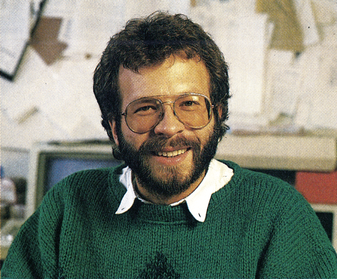

Über 1 Million...

.. Commodore 64 werden bis Weihnachten diesen Jahres in Deutschland verkauft sein. »Im November steht der Käufer des einmillionsten Commodore 64 fest. Wir werden dieses Ereignis gebührend feiern«, versprach Winfried Hoffmann, Geschäftsführer von Commodore Deutschland.
Was macht die Commodore-Heimcomputer so erfolgreich ? Irgendeine Begründung muß es doch geben, wenn ein Hersteller mit über 70 Prozent Marktanteil ganz klar die Nummer l ist. Die Antwort ist einfach: Software und Erweiterungen in Hülle und Fülle. Das Ganze läßt sich mit einer Endlosspirale vergleichen, mit einemin großen Stückzahlen lieferbaren, relativ preiswerten und leistungsfähigen Computer am Anfang. Über 500 000 Commodore-Heimcomputer wurden allein 1985 verkauft. Viele junge Programmierer und Bastler witterten das große Geschäft: Hunderte von Programmen und Erweiterungen für alle möglichen Anwendungen wurden entwickelt — und erfolgreich verkauft. Aus den Programmierern und Bastlern wurden Geschäftsleute, die bis heute viele Nachahmer gefunden haben.
Wer sich nicht alles kaufen konnte, der tauschte mehr oder weniger illegal seine Programme. Die Gilde der Knacker entstand, Computerfreaks, die hauptsächlich aus Abenteuerlust und aus Protest gegen überhöhte Preise Programme kopierten und verteilten. Schwarze Schafe trieben ihr Unwesen und versuchten illegal mit Software Geschäfte zu machen. Damit entstand ein riesiges, für fast jedermann zugängliches Software-Reservoir für den Commodore 64 und dem dazu kompatiblen C 128.
Dies — und die Tatsache, daß das Magazin 64'er, Deutschlands meistverkauftestete Computerzeitschrift, ausschließlich für die Besitzer von Commodore-Heimcomputern gemacht ist — wird diesen Computern noch ein langes Leben bescheren. Außerdem ist das immer noch das beste Argument, wenn sich jemand für das Computerhobby interessiert und einsteigen will, denn für keinen Heimcomputer gibt es mehr Software, Hardware-Erweiterungen, Literatur und Leute, die man um Hilfe fragen kann.
Michael Scharfenberger, Chefredakteur